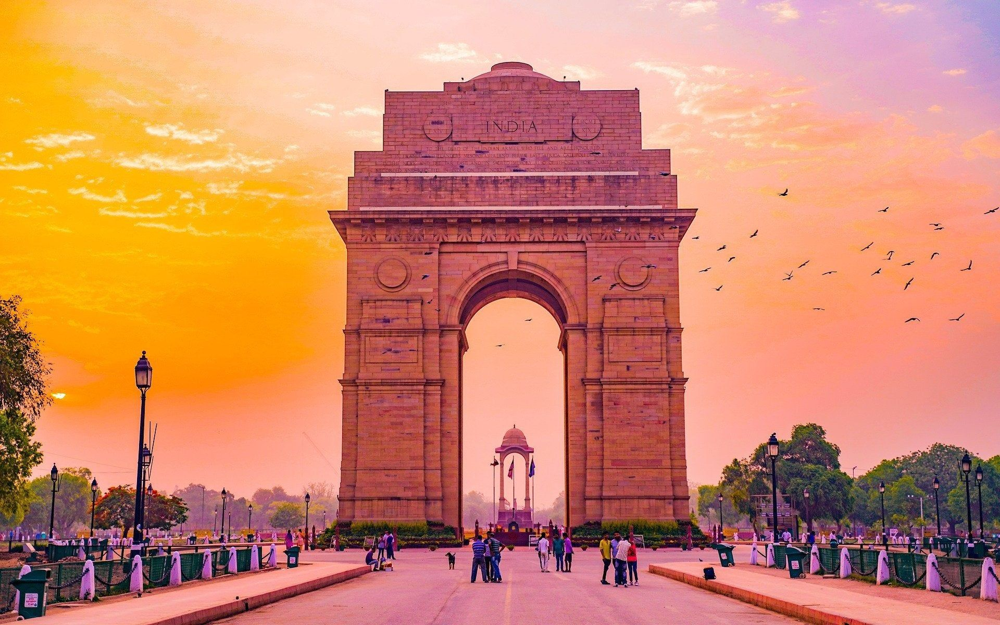

Taj Mahal is without a doubt, one of the most impressive pieces of architecture not only in India but all around the world.
Built in 1653 on the orders of the Mughal ruler Shahjahan as a resting place for his beloved queen Mumtaj Mahal, it is a symbol of love.
Considered to be one of the finest examples of Mughal Architecture.
It is considered as one of the seven wonders of the world in the modern era. It attracts about 3 million tourists every year thus being a hotshot for visitors globally.
The Taj Mahal online website is one of the historical sites that offer free online virtual tours.
Timings
Opens 30 minutes before sunrise and closes 30 minutes after sunset
Entry Fee
Indian Citizens and Visitors from SAARC countries: INR 50
Citizens of SAARC and BIMSTEC Countries: INR 540
Foreign Visitors: INR 1100

India Gate, Delhi
India Gate is without a doubt one of the most recognizable structures of the country.
Often referred as the replica of Arc de Triomphe in Paris, this majestic monument is dedicated to those 70,000 soldiers who lost their lives during World War I.
Completed in 1931; India Gate stands 42m tall in height with name of the Indian martyrs carved on it.
The Amar Jawan Jyoti is a much later addition to the structure, which was created after 1971’s Indo-Pak war.
Today, India Gate is amongst the most famous monuments in Delhi and India.
RedFort, Delhi
The Red Fort is the most popular and important of the forts in India.
It was constructed under the leadership of Shah Jahan and since then has been home to various nobles and kings.
Once, the fort’s facade was graciously decorated with diamonds, but over the years the diamonds were stripped off as kings lost their wealth.
Today, the Red Fort is an important landmark and is used for the Prime Minister’s address to the nation on Independence Day.
Sanchi Stupa, Madhya Pradesh
This ancient complex was built in the 3rd century BC by the great Mauryan King Ashoka. The complex is known for having the oldest stone structures in India.
At the complex you will find many stupas of Buddha made from stone. The Great Stupa of Sanchi is a site that you have to visit at the Sanchi Stupa.